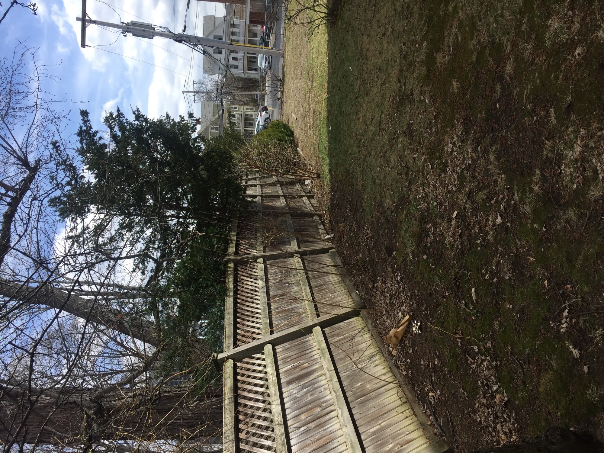
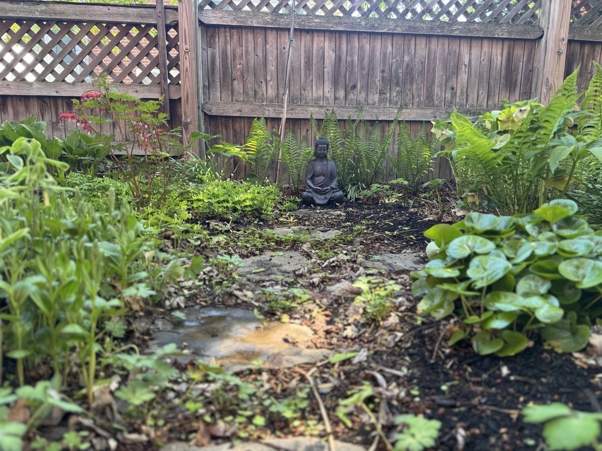
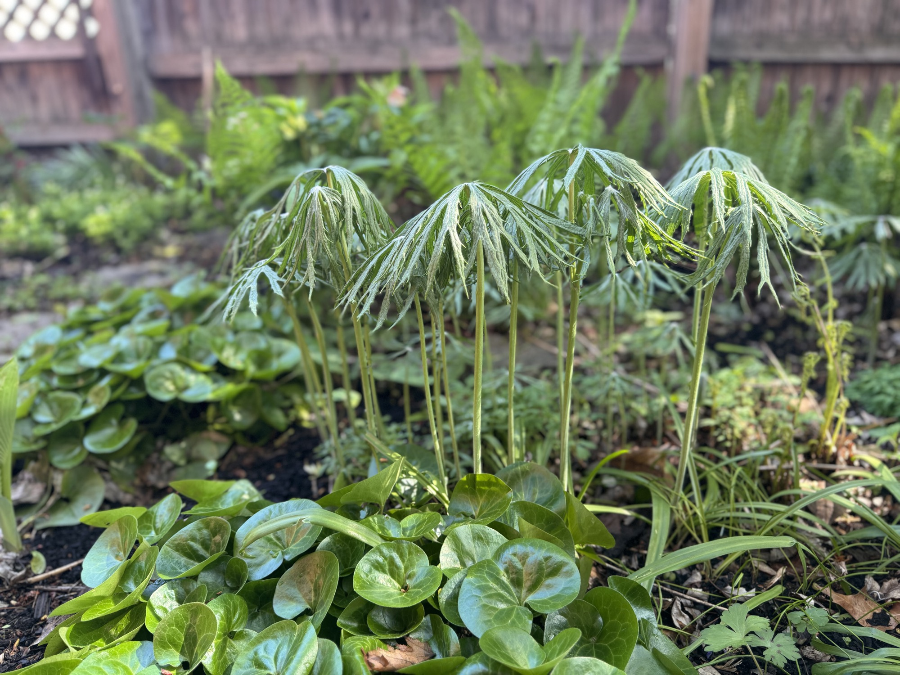

On my property, Arlington
This is another area of my property where I completely replaced the (patchy) lawn with a lush garden of perennials. On the shady side of the house, this involved choosing an area for a circle of Adirondack chairs, and designing a curved path to wind its way through the space. My photos don't capture the whole area (~400 sq ft total), but you can at least get an idea.
Serviceberry, rose of Sharon, weeping hemlock
Fiddlehead ferns, shredded umbrella plant, Solomon's seal, bleeding heart, wild geranium, hellebore, hosta, columbine, trillium, mayapple, ligularia, sweet woodruff, dwarf Solomon's seal, lily of the valley, snowdrops, scilla siberica, hairy alumroot, Japanese anemone, European wild ginger, monkshood, climbing hydrangea


The Details

